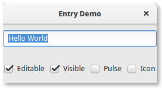

7. Entry¶
Widgets de entrada permitem que o usuário insira texto. Você pode alterar o conteúdo com o método Gtk.Entry.set_text() e ler o conteúdo atual com o método Gtk.Entry.get_text(). Você também pode limitar o número de caracteres que a Entrada pode receber chamando Gtk.Entry.set_max_length().
Ocasionalmente, você pode querer tornar um widget de Entrada somente leitura. Isto pode ser feito passando False para o método Gtk.Entry.set_editable().
Os widgets de entrada também podem ser usados para recuperar senhas do usuário. É uma prática comum ocultar os caracteres digitados na entrada para evitar revelar a senha a terceiros. Chamando Gtk.Entry.set_visibility() com False fará com que o texto fique oculto.
Gtk.Entry tem a capacidade de exibir informações de progresso ou atividade por trás do texto. Isso é semelhante ao widget Gtk.ProgressBar e é comumente encontrado em navegadores da Web para indicar quanto de um download de página foi concluído. Para fazer uma entrada exibir tais informações, use Gtk.Entry.set_progress_fraction(), Gtk.Entry.set_progress_pulse_step() ou Gtk.Entry.progress_pulse().
Além disso, uma entrada pode mostrar ícones em ambos os lados da entrada. Esses ícones podem ser ativados clicando, podem ser configurados como fonte de arrastar e podem ter dicas de ferramentas. Para adicionar um ícone, use Gtk.Entry.set_icon_from_icon_name() ou uma das várias outras funções que definem um ícone a partir de um nome de ícone, um pixbuf ou tema de ícone. Para definir uma dica de ferramenta em um ícone, use Gtk.Entry.set_icon_tooltip_text() ou a função correspondente para marcação.
7.1. Exemplo¶
1 2 3 4 5 6 7 8 9 10 11 12 13 14 15 16 17 18 19 20 21 22 23 24 25 26 27 28 29 30 31 32 33 34 35 36 37 38 39 40 41 42 43 44 45 46 47 48 49 50 51 52 53 54 55 56 57 58 59 60 61 62 63 64 65 66 67 68 69 70 71 72 73 74 75 76 77 | import gi
gi.require_version('Gtk', '3.0')
from gi.repository import Gtk, GObject
class EntryWindow(Gtk.Window):
def __init__(self):
Gtk.Window.__init__(self, title="Entry Demo")
self.set_size_request(200, 100)
self.timeout_id = None
vbox = Gtk.Box(orientation=Gtk.Orientation.VERTICAL, spacing=6)
self.add(vbox)
self.entry = Gtk.Entry()
self.entry.set_text("Hello World")
vbox.pack_start(self.entry, True, True, 0)
hbox = Gtk.Box(spacing=6)
vbox.pack_start(hbox, True, True, 0)
self.check_editable = Gtk.CheckButton("Editable")
self.check_editable.connect("toggled", self.on_editable_toggled)
self.check_editable.set_active(True)
hbox.pack_start(self.check_editable, True, True, 0)
self.check_visible = Gtk.CheckButton("Visible")
self.check_visible.connect("toggled", self.on_visible_toggled)
self.check_visible.set_active(True)
hbox.pack_start(self.check_visible, True, True, 0)
self.pulse = Gtk.CheckButton("Pulse")
self.pulse.connect("toggled", self.on_pulse_toggled)
self.pulse.set_active(False)
hbox.pack_start(self.pulse, True, True, 0)
self.icon = Gtk.CheckButton("Icon")
self.icon.connect("toggled", self.on_icon_toggled)
self.icon.set_active(False)
hbox.pack_start(self.icon, True, True, 0)
def on_editable_toggled(self, button):
value = button.get_active()
self.entry.set_editable(value)
def on_visible_toggled(self, button):
value = button.get_active()
self.entry.set_visibility(value)
def on_pulse_toggled(self, button):
if button.get_active():
self.entry.set_progress_pulse_step(0.2)
# Call self.do_pulse every 100 ms
self.timeout_id = GObject.timeout_add(100, self.do_pulse, None)
else:
# Don't call self.do_pulse anymore
GObject.source_remove(self.timeout_id)
self.timeout_id = None
self.entry.set_progress_pulse_step(0)
def do_pulse(self, user_data):
self.entry.progress_pulse()
return True
def on_icon_toggled(self, button):
if button.get_active():
icon_name = "system-search-symbolic"
else:
icon_name = None
self.entry.set_icon_from_icon_name(Gtk.EntryIconPosition.PRIMARY,
icon_name)
win = EntryWindow()
win.connect("destroy", Gtk.main_quit)
win.show_all()
Gtk.main()
|